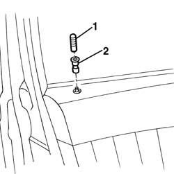

7005C62 front side door safety catch knob and seal r r
- Path
- Procedures > 70 FITTINGS > 7005 PASSENGER COMPARTMENT FRONT SIDE DOORS > 7005C front lock controls > 7005C62 front side door safety catch knob and seal r r
- Kind
- repair procedure (removal / refitting; the operation number is the code)
- Applies to
- all engines; all production periods
- Interactive page
- https://sloeber94.github.io/elrnDB-a156/en/#/3238584
Applies to: all engines; all production periods
 Removing
Removing
 Refitting
Refitting1. Open the door and unscrew the knob.
2. Take the packing off.

Applies to: all engines; all production periods
Refitting
RemovingCheck that the knob and the packing are not damaged.
Screw the knob.
Test the correct operation of the safety switch.